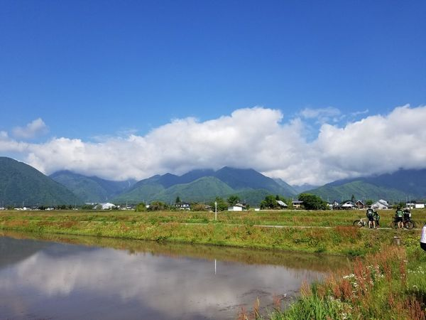
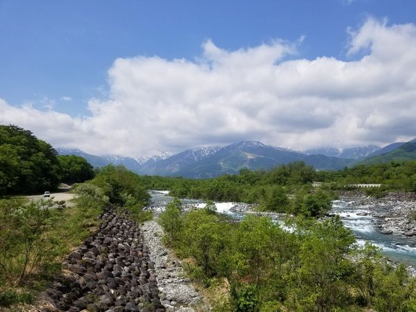

先日、アルプスあずみのセンチュリーライド(緑のAACR)に参加してきました。
これは私は以前にも参加していたのですが、コロナ禍で2年連続で中止となり、今回は３年ぶりの開催となりました。自粛ムードは世間でもすっかり緩んでいますが、新型コロナ感染者数で言えば今は２年前よりも去年よりも多いので、今年開催すること、それに参加することには異論もあると思います。しかし、このイベントは私にとっては大変楽しいイベントで、我慢ができなかった、というのが正直なところです。
前回参加した時の内容はこちら。
イベント自体は5/22の日曜ですが、出走が05:30ですし受付は前日なので、土曜のうちに移動します。名古屋駅で輪行袋に自転車を詰めてしなの７号で松本まで。

輪行は何度もやっているのに、毎回苦労します。

最後席を取ったので、席の後ろに置きます。しなの７号だとぎりぎりでした。
以下、風景です。正直今回、写真ポイントにおける参加者のマナーが悪すぎて、あれに混じるのも嫌だなあ、と思ったのであまり撮っていません。白馬エイドで撮ればいいやと思っていたのに今回場所が違ってたしな。



今回も大変楽しかったので来年も(開催されれば)行くのは確定として、もうちょっとのんびり、寄り道なんかもしながら120kmで参加するか、今回と体力の衰え方を比べるために160kmで出るべきか、迷い中です。
この記事へのコメント：
Posted by: とおりすがり 2024/02/25 23:45
Posted by: とおりすがり 2024/02/29 22:30
コメントを書く
名前: